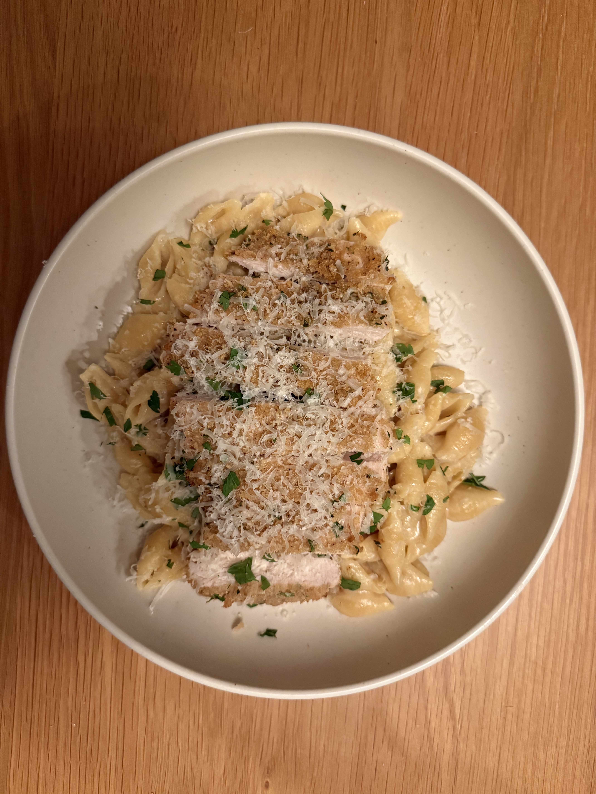
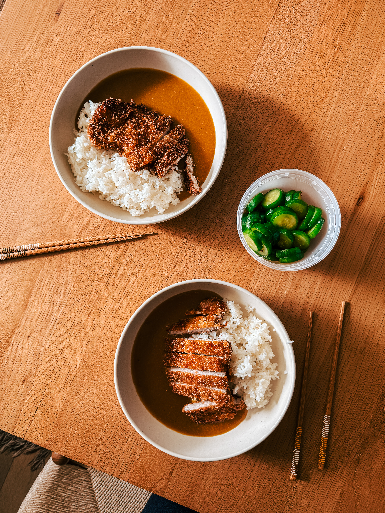
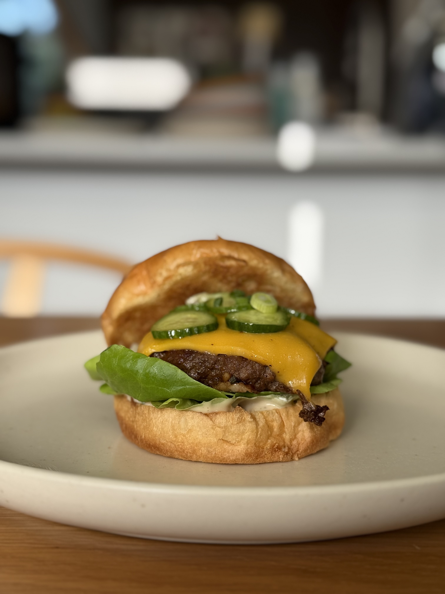
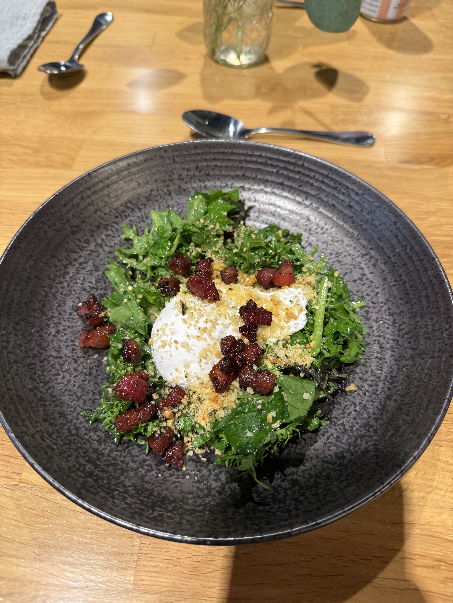

Carrot risotto topped with chili crisp roasted carrots and grated parmesan cheese.

Parmesan-crusted chicken over miso mascarpone shell pasta.

Pork katsu curry served with a sesame cucumber pickle.

Korean-inspired cheeseburger with garlicky scallion mayo, sesame cucumber pickles, American cheese, and butter lettuce, served on a toasted brioche bun.

Salad Lyonnaise — mixed greens in bacon vinaigrette, topped with bacon lardons, a poached egg, and pangrattato.